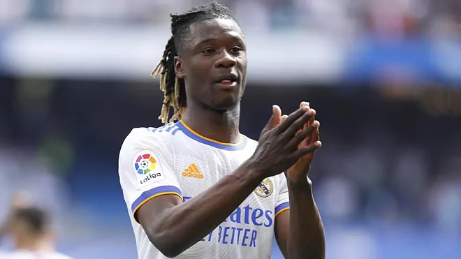
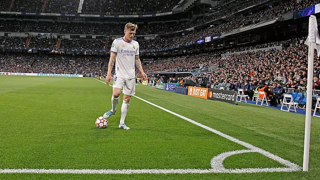

DIAZ CRUZ ALDAIR
Mi Web Personal
NOTICIAS DEPORTIVAS
Camavinga: "No me gusta no jugar, me gustaría jugar más"

Eduardo Camavinga ha concedido una entrevista a Téléfoot
en la que ha repasado su primera temporada en el Real Madrid.
Un año que puede culminar tocando la gloria si los blancos se
proclaman campeones de la Champions League.
"No necesariamente hay un favorito para este partido. El Liverpool
también está en una buena dinámica, será algo especial frente a mi
familia, depende de nosotros darlo todo para ganar este trofeo", ha
explicado. Sabía que iba a tomar tiempo. Eso es lo primero que me
dijeron cuando llegué. Me habían advertido que el primer año aquí
es complicado. Me tomé mis problemas con paciencia y seguí trabajando",
ha
A pesar de todo, valora positivamente su primera toma de contacto con
el Real Madrid. "Mi historial sigue siendo bueno, aunque hay cosas que debo mejorar. Jugué grandes partidos, ganamos la Liga y la Supercopa. En general, es positivo", ha comentado
Kroos "aplaza la decisión sobre su futuro"
Toni Kroos apostó muy fuerte por el Real Madrid en 2014. Dejó atrás al Bayern, llegando al equipo blanco como campeón del mundo y desde el primer día mostró un compromiso fuera de toda duda. El alemán más madrileño y madridista que se conoce, pasó a convertirse en referencia absoluta del equipo blanco. Todo ello desde el silencio, el trabajo y el respeto, ese que ha demostrado una vez más durante esta temporada cuando los dirigentes del Real Madrid le ofrecieron ampliar un año más el contrato que termina en 2023. El alemán no lo dudó y dijo que no era el momento, que primero quería saber cómo se encontraría la próxima temporada antes de comprometer al club con un año más de contrato. Su respuesta fue sincera no porque tuviera dudas sobre su posible rendimiento y sí por un principio absoluto de lealtad hacia el Real Madrid. Simplemente prefiere esperar, ver lo que le dice el cuerpo y su cabeza antes de comprometer a la entidad madridista con un año más de contrato y terminar siendo una carga para el club.